本文主要讲解如何使用状态模式来消除大量的if-else条件判断代码
在我们的App中，订单模块会有很多的状态，例如待付款、付款中、已预约、已取消、已评价等。我们抽一个取消的流程来看下，取消时需要判断当前状态是否允许取消，伪代码如下：
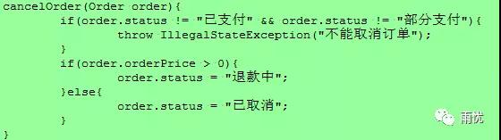
如果状态类型很少的话，这样子判断还可以，一旦我们的状态类型多起来的话，那么我们这里就会是一大堆的if-else条件判断，不仅难以阅读，而且维护起来容易出错。
我们有三种方式来重构这样的代码：
- 设计模式之状态模式
- 领域驱动设计之状态建模
- 状态机
设计模式之状态模式
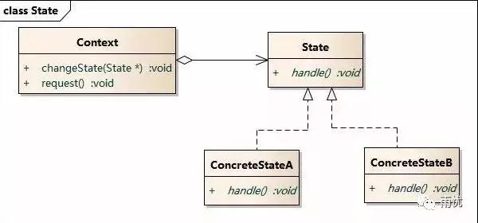
其中State是状态接口，ConcreteState是各个具体的状态实现。我们在这里定义个订单状态接口OrderState：
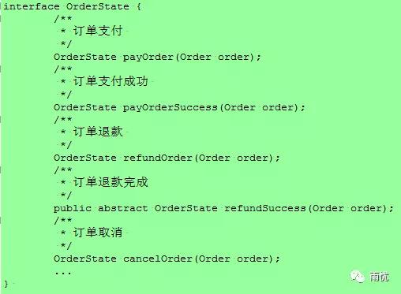
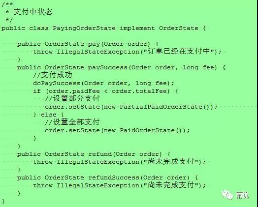
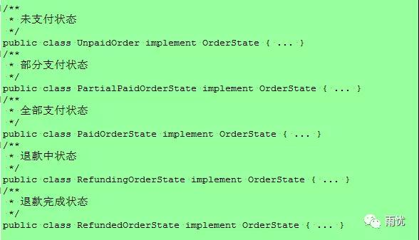
可以看到不是每个状态都能够支持所有操作的，例如：支付中的状态不可以进行支付操作；未支付的状态不可以进行退款操作等。当然我们可以创建一个抽象类AbstractOrderState，把操作的默认实现都放进去，具体的状态实现只覆盖自己能进行的操作。
然后我们定义一个Context，即订单实体类Order，它持有一个State字段，通过State实现所有的状态转换逻辑：
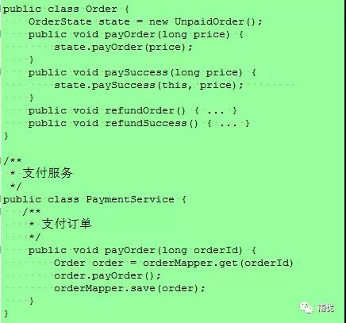
通过状态模式，可以省略一大堆条件判断，逻辑实现起来更清晰。
领域驱动设计之状态建模
在领域驱动设计中，我们可以定义一些操作接口，然后将每种状态的订单都定义为一个实体类，让这些实体类实现需要的操作接口：
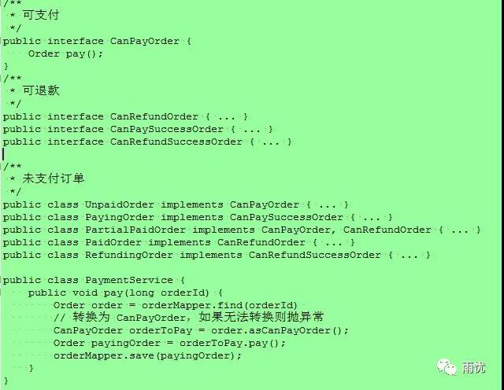
状态机
不管是状态模式还是状态实体，多个状态之间的转换，还是分散在各个状态的实现里的。其实所有的状态转换都可以概括为：1
State(S) x Event(E) -> Actions (A), State(S')
即如果当前状态为S，接收到一个事件E，则执行动作A，同时状态转换为S‘。
Akka 框架实现了一个有限状态机FSM，它定义了强有力的DSL语法，可以把状态转换和业务处理逻辑分离开来。我们这节主要讲解下Akka FSM的使用。我们先假设我们的订单流程如下面流程图所示：
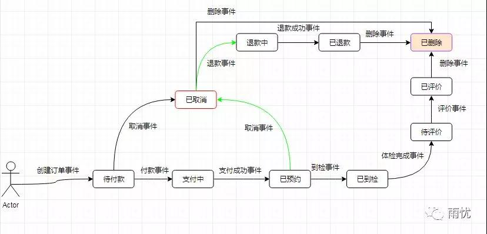
然后我们定义一些状态，OrderState继承自FSMState：
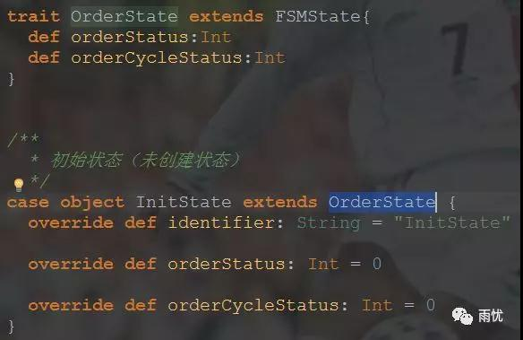
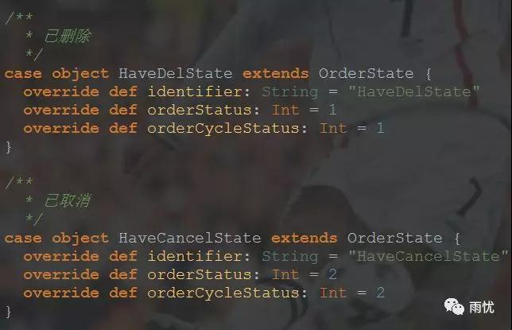
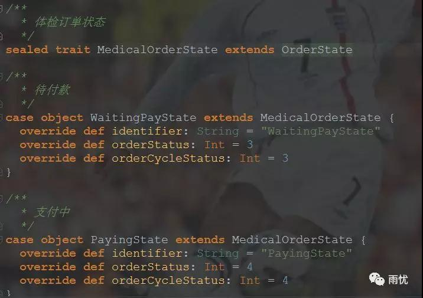
然后我们定义一些Command和DomainEvent。DomainEvent将会被写入日志，它与Command的关系是：我们可以给FSM发送Command，FSM执行Command时会产生DomainEvent，然后这些产生的DomainEvent会被写入日志：
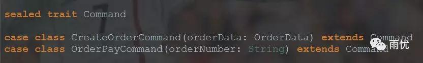
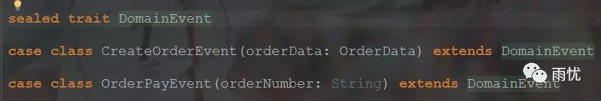
然后我们定义我们的状态数据：
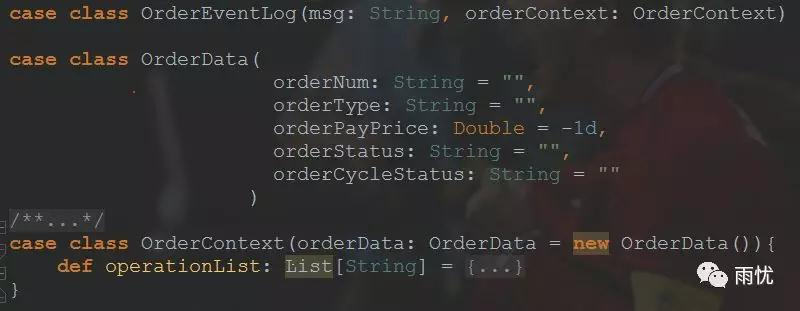
然后我们创建我们的状态机MedicalOrderFSM：
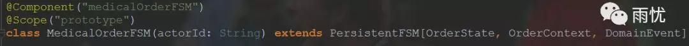
可以看到我们的状态机继承自PersistentFSM trait，我们看下PersistentFSM trait：
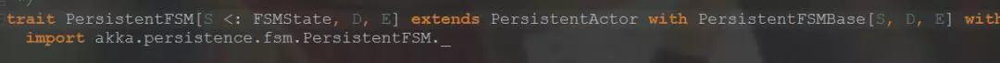
PersistentFSM继承了PersistentActor，说明它具备了事件持久化和日志恢复能力。继承的另一个类型PersistentFSMBase是FSM trait的重新定义，针对状态机的持久化特性设计了一套持久化状态转换的DSL。三个类参数S,D,E分别代表状态类型（State）、状态数据（Data）、领域事件（Event），与FSM比较：PersistentFSM除增加了event参数外，State类型是以FSMState类型为基础的，方便对State进行序列化（serialization）.
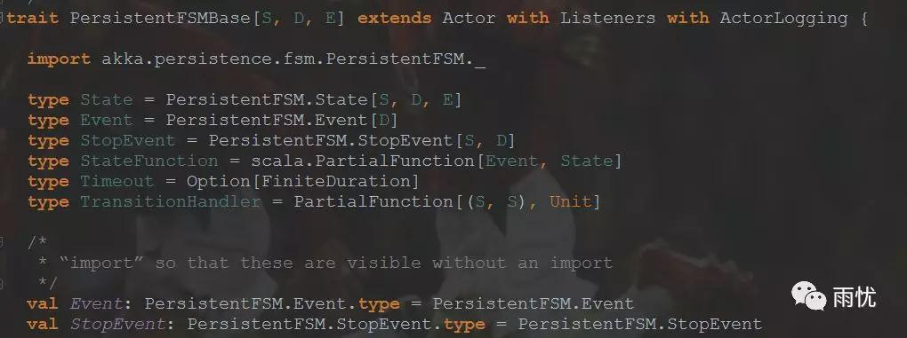
然后我们就可以使用DSL来定义我们的状态机处理流程：1
2
3
4
5startWith(initState,initData) //定义状态机起始状态
when(stateA) {...} //处理各种状态
when(stateB) {...}
whenUnhandled {...} //处理共性状态
onTransition {...} //状态转变跟踪
状态转换是通过stay(保持当前状态)、goto(到下一个状态)、stop(停止)实现的：
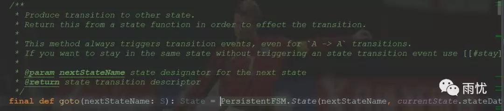
可以看到stay是通过goto来实现的：
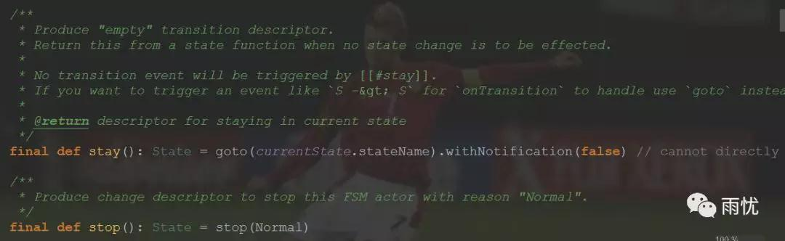
我们挑一个看下：
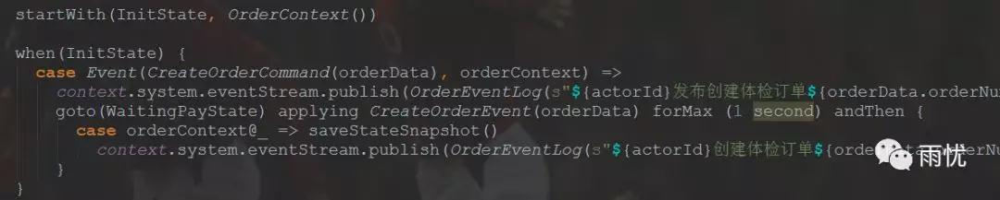
状态机默认状态为InitState，他可以处理CreateOrderCommand，然后跳转到WaitingPayState状态(待支付)，然后应用CreateOrderEvent事件。
只有状态转换（即InitState转换成WaitingPayState）和数据转换都成功（即CreateOrderEvent执行成功），状态机的本次状态流程才会最终完成，任何一个执行失败，都会执行回滚。这里执行成功后，我们调用saveStateSnapshot保存当前快照，用来重启后状态恢复。
然后我们定义一个Tracker Actor用来处理事件流：
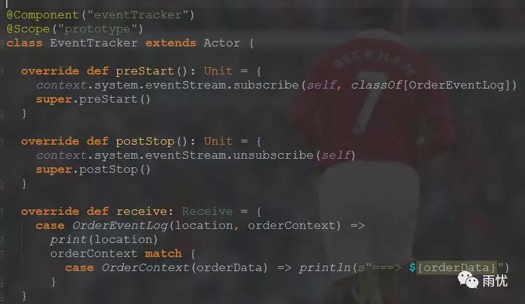
然后我们可以测试下我们的状态机，因为actor是轻量级的，因此我们的一个订单交由一个actor来处理，每个actor大概有30字节，1G的内存可以有上百万的actor：
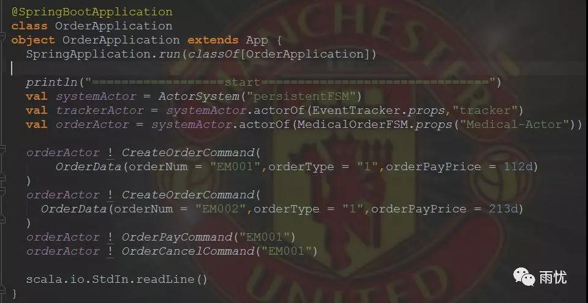
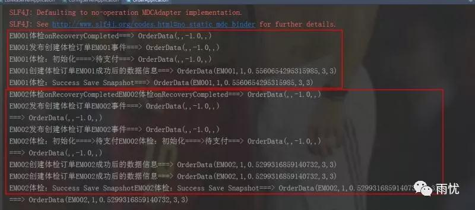
可以看到我们创建了两个订单，状态由“初始状态0“变成了“待支付3“。
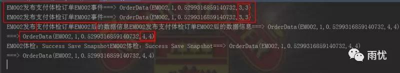
然后对订单支付，可以看到支付成后，状态由“待支付3“变成了“已支付4”。
我们的状态机状态数据会异步的写到外部存储中，这里使用的是mysql-async组件：
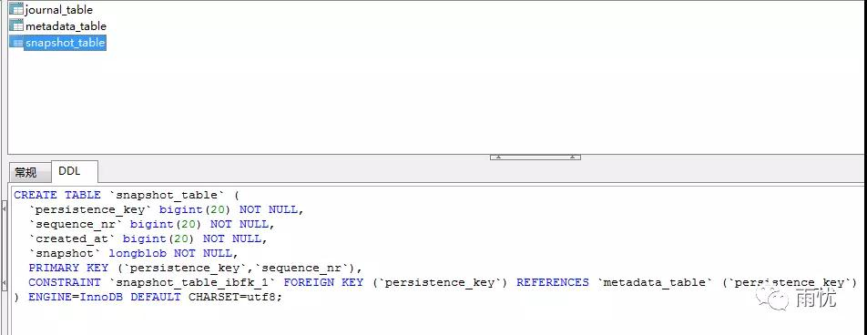
今天就先简单介绍到这里，后面有时间会分享下Akka FSM的源码。